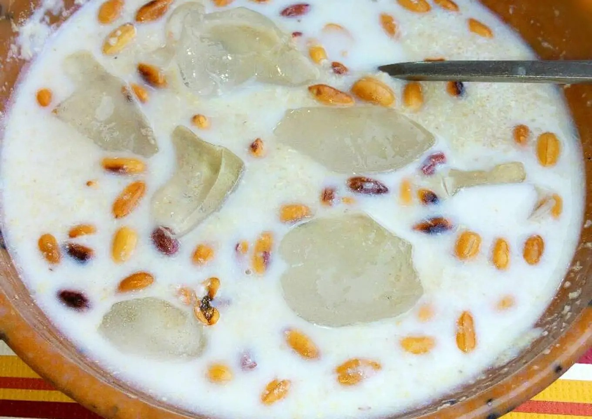
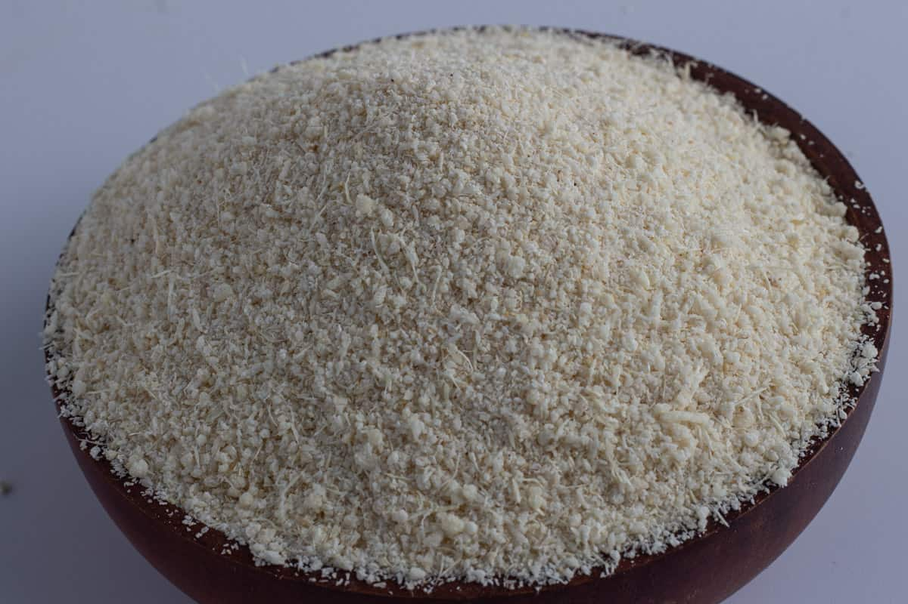
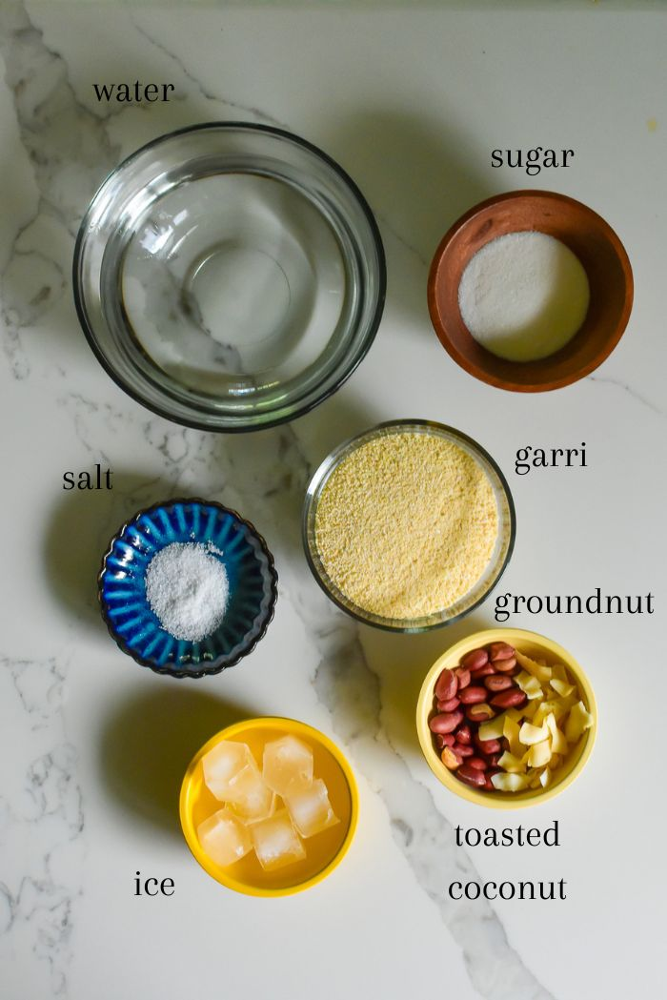
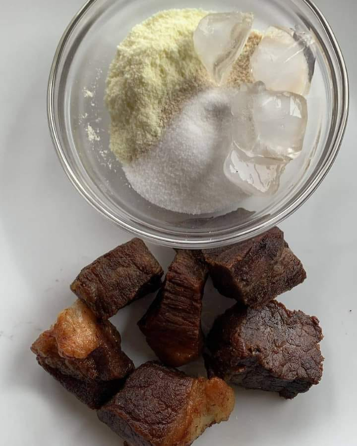

Jo3l Special Soaked Garri
Jo3l's Special Soaked Garri

Garri
Garri, pronounced gah-ree, is made from granulated cassava, a root vegetable that’s poisonous unless you peel and cook it first.
Commonly found in West Africa, there are two types of garri: yellow and white.
The flavor depends on how long it’s been fermented and the presence of palm oil.

Ingredients

- Garri
- Sweetners
- Water
- Ice block
Steps and Preparation
- Firstly, Add your garri to a bowl or cup (bowl is much enjoyable tho, my opinion) feel free to rinse with tap water (not a neccesity)
- Secondly, Add your sweetner to the raw garri and stir, make sure you stir properly, so the sweetner gets to every part of the meal
Please note, the sweetner can be either sugar or honey. Also it's not compulsory to use a sweetner.
- After adding your swwetner, add some ice block, garri is best enjoyed when it is cool.
- Optional, but you can use supplements, like kuli-kuli ,dried fish, akara, groudnut and many others to enjoy your garri, I personally prefer groudnut and roasted meat

Try this and thank me later.